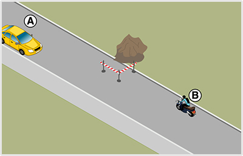
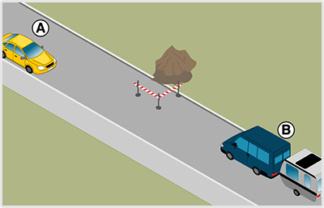
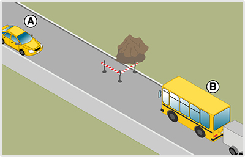
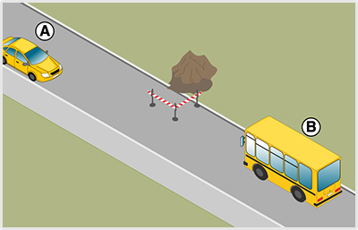
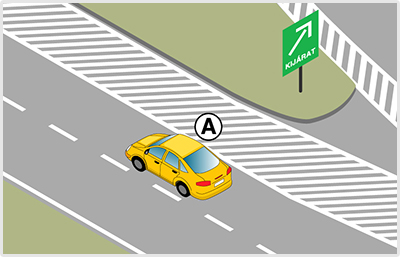
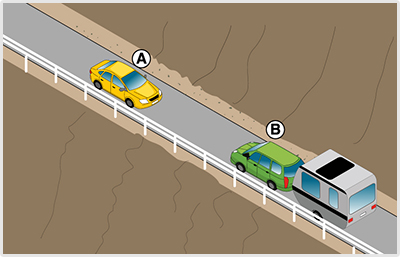

- 483. Kell-e megfelelő oldaltávolságot tartani az egymás mellett ellentétes irányban elhaladó járművek között? #703493
- Igen.
- Nem.
- 484. Hogyan kell az egymással szemben haladó járművek vezetőinek egymástól biztonságos oldaltávolságot tartani? #703494
- Szükség esetén kölcsönösen az úttest széléhez kell húzódniuk.
- Szükség esetén egyiküknek az úttest széléhez kell húzódni.
- Szükség esetén egyiküknek meg kell állni.
- 485. Hogyan kell lehetővé tenni a keskeny úttesten szükséges kitérés végrehajtását? #703495
- Megállással, útpadkára húzódással vagy hátramenettel.
- Csak megállással.
- Csak hátramenettel.
- 486. Melyik járművel kell hátramenetet végezni, ha a kitérés az úttest méretei miatt nem lehetséges? #703496
- Amelyikkel ez könnyebben megtehető.
- Amelyik később érkezett a helyszínre.
- Amelyik előbb fog a későbbiekben elkanyarodni.
- 487. Az egy forgalmi sávra szűkülő úttesten szembejövő járművek találkoznak. Melyiküknek van elsőbbsége? #703498
- Ha a közúti jelzésekből más nem következik, akkor annak a járműnek, amelyik irányváltoztatás nélkül tud továbbhaladni.
- Ha a közúti jelzésekből más nem következik, akkor annak a járműnek, amelyik irányváltoztatással tud továbbhaladni.
- Minden esetben a nagyobb járműnek van elsőbbsége.
- 488. Hogyan szabad a járművel megfordulni az alábbiak közül? #703499
- Úgy, hogy megfordulás közben a többi jármű és az úttesten haladó gyalogosok közlekedését ne akadályozza.
- Úgy, hogy megfordulás közben a többi jármű és az úttesten haladó gyalogosok közlekedését ne zavarja.
- Úgy, hogy megfordulás közben az úttesten haladó gyalogosok közlekedését ne zavarja, a járműforgalom akadályozása azonban megengedett.
- 489. Szabad-e a járműforgalmat akadályozni, amikor a várakozóhelyre történő beálláshoz szükséges hátramenetet végzi? #703500
- Rövid ideig szabad.
- Nem.
- Ez esetben a hosszabb időtartamú akadályozás is megengedett.
- 490. Szabad-e vasúti átjáróban járművel megfordulni? #703501
- Nem.
- Igen.
- 491. Szabad-e autópályán járművel hátramenetet végezni? #703502
- Nem.
- Igen.

- 492. Hogyan kötelesek a képen látható helyen a járművek egymás továbbhaladását biztosítani? #703812
- A járművekkel meg kell állni, és az elhaladást az útpadkára húzódással vagy hátramenettel kell lehetővé tenni.
- Egy harmadik forgalomirányító személy közreműködésével.
- Az ’A’ jelű tehergépkocsi köteles az útpadkára húzódni, hogy a ’B’ jelű gépkocsi az úttesten akadálytalanul tudjon továbbhaladni.
- 493. Mindkét jármű köteles az útpadkára lehúzódni a képen látható helyen, hogy egymás továbbhaladását biztosítani tudják? #703813
- Igen.
- Nem, csak az ’A’ jelű tehergépkocsi.
- Nem, csak a ’B’ jelű gépkocsi.
- 494. Melyik jármű végezzen hátramenetet a képen látható helyen, amennyiben a továbbhaladást csak hátramenettel lehet biztosítani? #703814
- A ’B’ jelű gépkocsi.
- Az ’A’ jelű tehergépkocsi.

- 495. A képen látható helyzetben mi a szabályos elhaladás sorrendje? #703818
- A ’B’ jelű motorkerékpár elsőbbséget ad az ’A’ jelű személygépkocsi részére.
- Az ’A’ jelű személygépkocsi elsőbbséget ad a ’B’ jelű motorkerékpár részére.
- Kölcsönös udvariassággal megegyeznek az áthaladás sorrendjén.
- 496. A képen látható helyzetben melyik jármű tegye lehetővé a másik számára az elhaladást? #703820
- A ’B’ jelű motorkerékpár.
- Az ’A’ jelű személygépkocsi.

- 497. A képen látható helyzetben mi a szabályos elhaladás sorrendje? #703821
- A ’B’ jelű járműszerelvény elsőbbséget ad az ’A’ jelű személygépkocsi részére.
- Az ’A’ jelű személygépkocsi elsőbbséget ad a ’B’ jelű járműszerelvény részére.
- Kölcsönös udvariassággal megegyeznek az áthaladás sorrendjén.
- 498. A képen látható helyzetben melyik jármű tegye lehetővé a másik számára az elhaladást? #703823
- A ’B’ jelű járműszerelvény.
- Az ’A’ jelű személygépkocsi.

- 499. A képen látható helyzetben mi a szabályos elhaladás sorrendje? #703824
- A ’B’ jelű járműszerelvény elsőbbséget ad az ’A’ jelű személygépkocsi részére.
- Az ’A’ jelű személygépkocsi elsőbbséget ad a ’B’ jelű járműszerelvény részére.
- Kölcsönös udvariassággal megegyeznek az áthaladás sorrendjén.
- 500. A képen látható helyzetben melyik jármű tegye lehetővé a másik számára az elhaladást? #703826
- A ’B’ jelű járműszerelvény.
- Az ’A’ jelű személygépkocsi.

- 501. A képen látható helyzetben mi a szabályos elhaladás sorrendje? #703827
- A ’B’ jelű járműszerelvény elsőbbséget ad az ’A’ jelű személygépkocsi részére.
- Az ’A’ jelű személygépkocsi elsőbbséget ad a ’B’ jelű járműszerelvény részére.
- Kölcsönös udvariassággal megegyeznek az áthaladás sorrendjén.
- 502. A képen látható helyzetben melyik jármű tegye lehetővé a másik számára az elhaladást? #703829
- A ’B’ jelű járműszerelvény.
- Az ’A’ jelű személygépkocsi.

- 503. A képen látható helyzetben mi a szabályos elhaladás sorrendje? #703830
- A ’B’ jelű autóbusz elsőbbséget ad az ’A’ jelű személygépkocsi részére.
- Az ’A’ jelű személygépkocsi elsőbbséget ad a ’B’ jelű autóbusz részére.
- Kölcsönös udvariassággal megegyeznek az áthaladás sorrendjén.
- 504. A képen látható helyzetben melyik jármű tegye lehetővé a másik számára az elhaladást? #703832
- A ’B’ jelű autóbusz.
- Az ’A’ jelű személygépkocsi.
- 505. Szabad-e kijelölt gyalogos-átkelőhelyen járművel megfordulni? #714868
- Igen.
- Nem.
- 506. Szabad-e útkereszteződésben járművel hátramenetet végezni? #714869
- Igen.
- Nem.
- 507. Hátramenet végzésekor kell-e a járművezetőnek arra alkalmas irányító személy közreműködéséről gondoskodnia? #714870
- Igen, ha a személy- és vagyonbiztonság ezt megkívánja.
- Nem, soha.
- Igen, minden esetben.

- 508. Ön az ’A’ jelű gépkocsival túlhajtott az autópálya kijáratán. Mikor jár el szabályosan? #715142
- Ha továbbhalad az ezt követő kijáratig.
- Ha vészvillogót használva az érkező járművek akadályozása nélkül visszatolat a kijáratig.
- Ha a leállósávon és az útpadkán korrigálja a hibáját.

- 509. Mi a megfelelő magatartás az ábrán látható forgalmi helyzetben? #715270
- A járművek kölcsönösen lehúzódnak az útpadkára, és ha így sem férnek el egymás mellett, akkor az a jármű végez hátramenetet, amelyik ezt könnyebben meg tudja tenni.
- Megvárják, amíg forgalomirányító személy érkezik a helyszínre, aki segíti majd a továbbhaladásukat.
- A ’B’ jelű járműszerelvény vezetőjének a biztonság érdekében le kell akasztania a lakókocsit.
- 510. Az ábrázolt forgalmi helyzet csak valamelyik jármű hátramenetével oldható meg. Mikor jár el szabályosan az ’A’ jelű gépkocsi vezetője? #715271
- Ha visszatolat.
- Ha megvárja, amíg a ’B’ jelű járműszerelvény visszatolat.
- 511. Az ábrán látható helyzetben melyik járműnek kell hátramenettel lehetővé tennie az egymás melletti elhaladást? #715272
- Az ’A’ jelű személygépkocsinak.
- A ’B’ jelű járműszerelvénynek.

- 512. Szabályos-e, ha a ’C’ jelű irányító személy megállítja az úttesten zajló forgalmat, amíg az ’A’ jelű jármű kitolat az épületből? #715554
- Nem, mivel nem minősül forgalomirányító személynek.
- Igen, ha az ’A’ jelű jármű vezetője erre felhatalmazta.
- Igen, mert piros tárcsát használ a járművek megállítására.
- 513. Hogyan kell elhelyezkednie a hátramenetet irányító személynek? #721697
- Úgy, hogy lássa a jármű mögötti területet, és a jármű vezetőjével is kapcsolata legyen.
- Minden esetben a jármű előtt helyezkedjen el úgy, hogy lássa a jármű vezetőjét.
- Közvetlenül a jármű mögötti területen helyezkedjen el.

- 514. Szabályos-e, ha a ’C’ jelű irányító személy megállítja az úttesten zajló forgalmat, amíg az ’A’ jelű jármű kitolat az épületből? #723629
- Nem, mivel nem minősül forgalomirányító személynek.
- Igen, ha az ’A’ jelű jármű vezetője erre felhatalmazta.
- Igen, mert piros tárcsát használ a járművek megállítására.